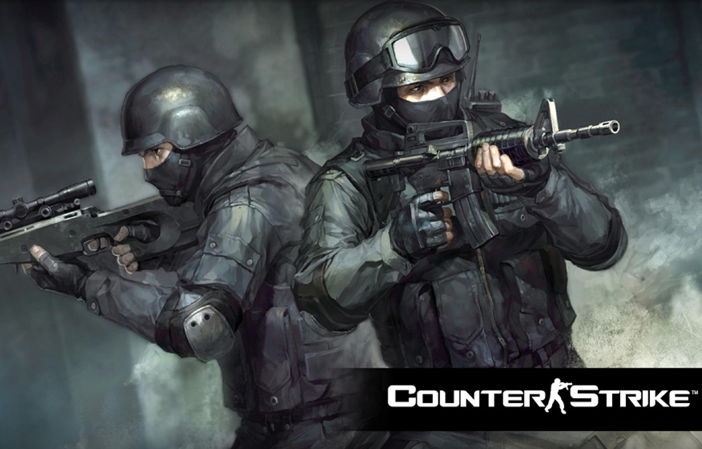

<figure>
	
	<p>
		<figcaption>CS絕對武力</figcaption>
		在1999年首次亮相的絕對武力(Counter-Strike)是一款以武裝份子與反恐小組對決為主題的
		第一人稱射擊遊戲。令人痛快的射擊感、針鋒相對時的刺激感、遊戲的流暢性與平衡性使這
		款遊戲成為了世界最暢銷的FPS作品。繼承了CS所開發出來的絕對武力online (Counter-Striker Online)
		不僅保持有原本的CS遊戲特質，更強調在不破壞這些遊戲特質的情況下新增武器、地圖、角色…等項目，
		提供給玩家不失原味的新樂趣。
	</p>
</figure>
